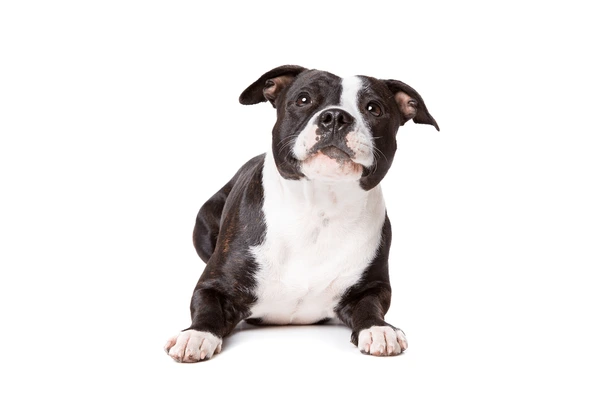

Afficher le Panier
bulldog
page d'acceuille
bulldog

Ajouter bulldog a panier
1550 DT
he bulldog (also called English bulldog) is a breed of nonsporting dog originally trained for fighting bulls (bullbaiting); today’s bulldog is quiet, gentle, and fond of napping, making it a wonderful companion..